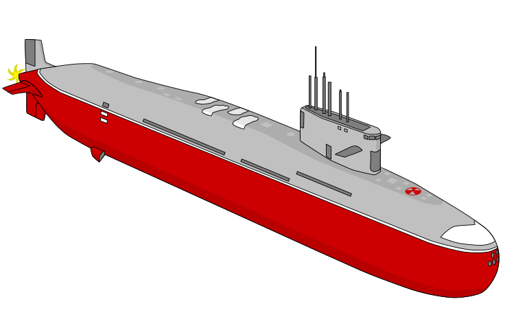
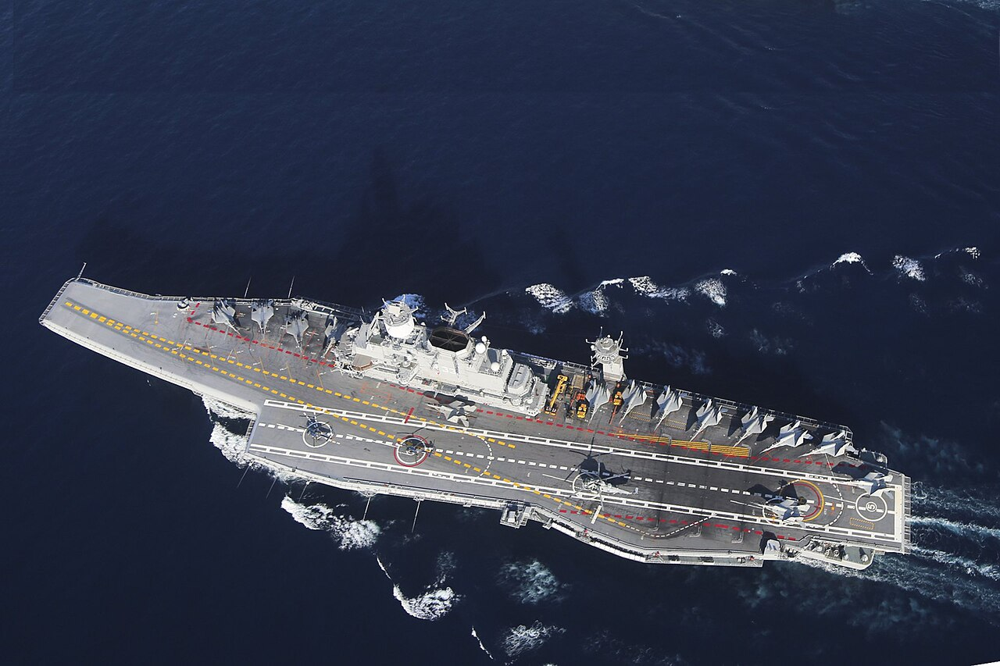
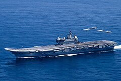

Nuclear
Submarine Fleet
Aircraft Carriers

Flagship

Indigenous
Destroyers

Indian Navy Budget 2025-26
Total Allocation
₹97,149.80 Crore
19.76% of defense budget
Modernization
₹24,390 Crore
New ships & submarines
Indigenous
₹1,500 Crore
Domestic production
The Indian Navy's budget for 2025-26 reflects India's maritime security priorities with increased funding for:
- Next-generation submarines (Project 75I)
- Additional aircraft carriers (IAC-2)
- Naval version of Rafale fighters
- Upgrades to existing fleet